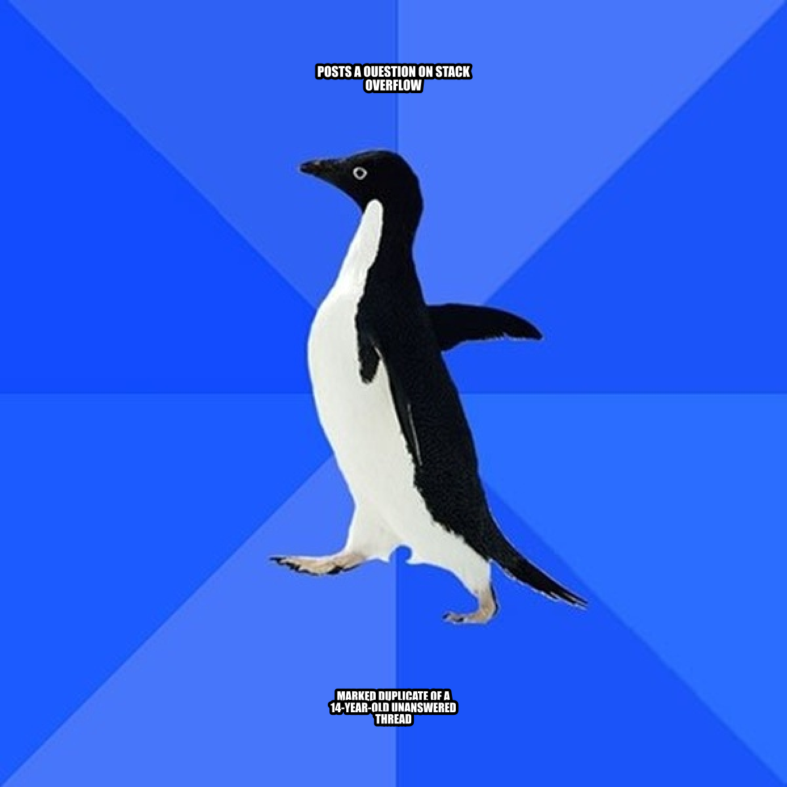

2 Asking Technical Questions
Prerequisites: none. This chapter stands on its own.
See also: Chapter 3, Chapter 6, Chapter 35, Chapter 25, Chapter 26.
Purpose

Computing education often assumes that students will “figure it out” when something breaks: how to describe an error, how to ask for help, and how to turn a confusing symptom into an answerable question. In practice, asking good technical questions is a core professional skill. It determines how quickly you can diagnose problems, how effectively you can use documentation, and how well you can collaborate with classmates, teaching assistants, colleagues, and online communities.
This chapter teaches a repeatable method for asking questions that are specific, reproducible, and respectful of other people’s time. It also explains why technical questions fail, how to make progress when you are stuck, and how to document your own work so that future you (or your teammates) can understand what happened.
Learning objectives
By the end of this chapter, you should be able to:
Convert a vague problem statement (“it doesn’t work”) into a specific, testable question.
Produce a minimal, reproducible example (MRE) that someone else can run.
Provide the right context: environment, inputs, expected output, actual output, and what you tried.
Use a structured workflow to debug before you ask, so your question reflects real investigation.
Choose an appropriate help channel (instructor, teammate, issue tracker, forum) and follow its norms.
Close the loop by summarizing the solution for others and for your future self.
Running theme: make your question runnable
The highest-impact upgrade you can make to a technical question is to ensure that another person could reproduce the issue (or at least understand exactly what you saw) without guessing. Good questions are not longer; they are more structured. They reduce uncertainty.
2.1 A mental model of technical help
When you ask for help, you are not asking someone to read your mind. You are inviting them to participate in a small investigation. In that investigation, three things matter:
The claim: what you expected and what you observed.
The evidence: the smallest set of steps and artifacts that support the claim.
The context: the environment and constraints that shape what counts as a valid solution.
If any of these are missing, helpers must fill the gaps by asking follow-up questions. That is normal, but it slows everything down. Your goal is not to impress people with technical vocabulary. Your goal is to supply the claim, evidence, and context so the investigation can start immediately.
Why “help me” fails
Most unproductive questions fail in one of a few characteristic ways. The most common is an ambiguous symptom — “it doesn’t work” without ever saying what “work” was supposed to look like. Closely related is missing reproduction steps: there is no concrete sequence of actions that another person could follow to make the same thing happen. A third is no stated expectation, where the helper cannot tell whether the program is misbehaving or the asker simply expected the wrong thing. A fourth is no evidence at all — no error message, no output, no screenshot, no code snippet — leaving the helper to guess. The fifth is the opposite problem: too much irrelevant detail, like a full notebook dump with no marker for where the failure happens, which buries the relevant lines under hundreds of unrelated ones. And the sixth is using the wrong channel, like asking for a half-hour debugging session in a chat venue designed for quick yes/no questions.
The good news is that each of these failure modes has a direct, mechanical fix, and the rest of this chapter is about applying them.
2.2 Before you ask: a short self-debugging loop
A productive question usually comes after 5–15 minutes of structured investigation. You are not required to solve the problem alone, but you should make a good-faith attempt to understand it. Chapter 6 develops this investigation mindset into a full systematic workflow; the triage loop here is your minimum viable version.
The 10-minute triage
Use this checklist before you ask for help:
Re-run once. Many issues are transient or caused by stale state.
Reduce scope. Can you reproduce the issue in a smaller script or notebook cell?
Read the error. Copy it exactly; do not paraphrase it.
Locate the first relevant line. Stack traces often include many internal frames.
Check recent changes. What did you change last?
Search with precision. Use the exact error message and library name.
Consult primary docs. Look up the function you are using.
Try one hypothesis. Change one thing and observe the result.
Record what you tried. This becomes part of the question.
Stop when you are looping. If you are repeating the same attempt, ask.
This loop matters because it generates valuable information: what triggers the bug, what does not, and what you have ruled out. That is the raw material of a good question.
What counts as “what I tried”
“What I tried” is one of the most useful fields in any technical question, but only if it contains concrete actions paired with their outcomes, not vague gestures at effort. A useful entry looks like “I verified the file exists with ls data/input.csv and it is in the correct folder,” or “I printed df.dtypes and confirmed that date is object, not datetime64[ns],” or “I tried pip install package==1.2.3 and the import error changed from ModuleNotFoundError to ImportError: cannot import name 'foo'.” Each of these tells the helper exactly what state the world is in and what hypotheses have already been ruled out.
The contrast is with vague statements like “I tried a bunch of things” or “I looked online but nothing worked.” Those carry no information — your helper has no idea what is still worth checking and will end up suggesting the same things you have already tried. If you cannot remember what you tried, that is a hint that you should be writing it down as you go.
2.3 The anatomy of a high-quality technical question
A strong technical question can often be expressed using five fields:
Goal: what you are trying to do.
Expected: what you expected to happen.
Actual: what actually happened.
Reproduction: the minimal steps/code/data that reproduce the issue.
Context: environment details and constraints.
This structure works across domains: Python errors, spreadsheet formulas, Git conflicts, file path confusion, and even conceptual misunderstandings.
Goal
State your goal in a single sentence built around a verb and an object: “Load a CSV into pandas and parse the date column,” “Connect to the remote server via SSH and run JupyterLab,” “Merge my feature branch into main without losing changes.” Each of these names a concrete outcome the helper can recognize as success.
This field matters more than people expect, because sometimes the most useful answer is not “fix this error” but “there is an easier way to achieve what you actually want.” If the helper only sees the symptom — say, a regex that does not match — they may help you debug the regex when the real answer is that you should not be using a regex at all (see Chapter 18). Stating the goal explicitly keeps that door open.
Expected vs. actual
Always distinguish between expected and actual behavior. This reduces confusion and helps others evaluate whether you are interpreting the output correctly.
Expected: a dataframe with 10 columns and a datetime index.
Actual:
ValueError: time data ’2026/13/01’ does not match format %Y-%m-%d.
Note that the expected behavior is not a guess about what the library does; it is the behavior you intend for your program.
Reproduction
If you can reproduce the problem reliably on your machine, you can almost always solve it; if someone else can reproduce it reliably on theirs, they can help you in minutes. A complete reproduction has four parts: the exact command(s) you ran (including the directory you were in when you ran them), the exact code snippet that triggers the issue, the input data — either the real file or a small synthetic version that has the same structure — and the output or error as plain text rather than a screenshot.
$ pwd
/Users/alex/projects/q3-analysis
$ python load.py
Traceback (most recent call last):
File "load.py", line 4, in <module>
df["date"] = pd.to_datetime(df["date"])
File ".../pandas/core/tools/datetimes.py", line 1075, in to_datetime
...
ValueError: time data '2026/13/01' does not match formatThat kind of block — directory, command, output, all as text — is what makes a question reproducible.
Context
“Context” is the set of details that affect whether a proposed solution will actually work on your machine. The fields that come up most often are your operating system (Windows, macOS, or Linux), your Python version and the environment you are using (conda, venv, system Python), the versions of the packages involved, any hardware constraints that matter (memory, GPU availability), whether you have administrator access on the machine, and whether the work is local or running on a remote server. You do not need to provide every field every time; provide enough to rule out the major classes of problem. For Python errors, the four lines below answer most of the questions a helper would otherwise have to ask:
python --version
python -c "import sys; print(sys.executable)"
pip show pandas | head -2
uname -a # macOS/Linux; on Windows use 'systeminfo' or 'ver'Paste that block once at the bottom of your question and the helper has nearly everything they need.
2.4 Minimal Reproducible Examples (MREs)
A minimal reproducible example is the most powerful tool you have for asking questions. It is also a tool for debugging yourself.
What “minimal” means
“Minimal” does not mean tiny at all costs; it means “no irrelevant parts.” An MRE includes only the elements required to trigger the issue.
For example, if your notebook has 50 cells, but the error happens in one function call, your MRE might be a 10-line script that imports the same library, constructs a small input, and calls that function.
Three ways to build an MRE
The first way is deletion: start with your real code and delete pieces until the error goes away. Each deletion that still fails proves that the code you removed was not relevant. The last version that still produces the failure is your MRE. This is fast when the failing code is short and the bug is concentrated in a small region.
The second way is construction: start from a blank script and add pieces back until the error appears. This is slower than deletion, but it has the advantage of clarifying which line is the actual trigger — by definition, it is the one whose addition flipped the script from “works” to “broken.” Use construction when deletion is hard (because the failing code is very large) or when you want a rock-solid story about cause and effect to put in a question.
The third way is substitution: replace your real data with synthetic or sample data that has the same structure. This is essential whenever the real data is large, private, or messy enough that you cannot share it. Pandas is happy to read from io.StringIO, so a few inline rows of CSV are usually enough:
import pandas as pd
from io import StringIO
raw = """name,age,joined
Ada,35,2026/01/15
Lin,42,2026/13/01
"""
df = pd.read_csv(StringIO(raw))
df["joined"] = pd.to_datetime(df["joined"]) # reproduces the ValueErrorMost real MREs use a combination of all three: you delete the irrelevant code, substitute synthetic data for the real input, and end up with a 15-line script anyone can run.
A template for MREs
The following template is appropriate for many Python questions:
# mre.py
import sys
import platform
import package # replace
print("Python:", sys.version)
print("Platform:", platform.platform())
print("Package:", package.__version__)
# minimal input
x = ...
# reproduce
result = package.some_function(x)
print(result)When you share an MRE, you can delete the environment printouts if they are irrelevant, but they are valuable when version mismatches are common.
2.5 How much context is enough?
Students often oscillate between too little context and too much. Use the following rule:
Include anything a helper would need to run the same steps and see the same output.
If you are not sure, include the context once, and then trim based on feedback.
Environment context: the “three lines”
For Python projects, three short commands resolve a remarkable number of mysteries on their own. The first is python --version, which tells you which language version is running. The second is which python on macOS or Linux (or where python on Windows), which tells you the file path of the interpreter — and therefore which environment it lives in. The third is pip show <package> or conda list <package>, which tells you whether the package you think is installed actually is, and at what version. Together these three answer the most common version of “why isn’t this working”: you are using a different Python than you think.
python --version
which python # macOS/Linux (Windows: where python)
pip show pandas | head -3File system context
When your issue involves missing files, always paste three things: your current working directory, the relative or absolute path you used in the code, and a directory listing showing whether the file actually exists where you said it would. A surprising number of “file not found” errors are not really errors at all — they are “you are in the wrong folder.”
$ pwd
/Users/alex/projects/q3-analysis/notebooks
$ ls ../data | head
input.csv
metadata.json
$ python -c "import pandas; pandas.read_csv('data/input.csv')"
FileNotFoundError: [Errno 2] No such file or directory: 'data/input.csv'Paste exactly that, and the helper can immediately point at the cause: you are inside notebooks/, the file is in ../data/, the relative path needs the .. prefix or you need to cd up one level first.
2.6 Choosing the right channel
Different venues have different expectations.
In-class and office hours
When you are asking an instructor or TA face to face, the bar is lower than for an online forum, but the same preparation pays off. Bring your MRE and the literal text of the error, explain what you have already tried (so the instructor does not waste the first ten minutes suggesting things you already ruled out), and be ready to reproduce the problem live on your laptop. It also helps to remember that office hours are not just for bugs — they are some of the best venues for clarifying a concept you only half-understand or asking whether your overall workflow is sensible. Bringing an open-ended question is fine, as long as it is specific enough to have a useful answer.
Teammates
Teammates have the same time constraints you do. Respect that by writing a concise problem statement before you ping them, by making it easy to help asynchronously — share a link to the failing line, paste the error, summarize what you tried — and by not dumping a full repository on them with no guidance about where to look. The smaller the area of the codebase you ask them to load into their head, the faster they can help.
Issue trackers
If your course (or your team) uses GitHub Issues or a similar tracker, treat an issue as a formal question with an audit trail. Future readers — including future you — will appreciate the structure. The first thing to get right is the title: it should be specific enough to identify the problem at a glance, like pd.read_csv fails when sep=";" with UTF-8 BOM, not vague enough to apply to a hundred other situations like read_csv broken. Issues are the right channel when the bug affects more than one person, when the answer should be preserved for later (rather than evaporating in chat), or when the resolution is going to require follow-up work that someone needs to track.
Public forums
Public forums — Stack Overflow, GitHub Discussions, your course Discord — can be enormously helpful, but they have norms you should respect. The expectation is that you will show evidence of your own investigation (so volunteers do not have to triage hundreds of “does anyone know” posts), include a real MRE rather than a vague description, give the question a clear and specific title, and never share sensitive data like API keys, real student records, or anything subject to FERPA / HIPAA / GDPR. If you are a beginner, do not worry about perfect terminology — most communities are forgiving about that. Do worry about reproducibility and clarity, because those are the things that determine whether your question gets answered or scrolls into oblivion.
2.7 Searching and asking on Stack Overflow
Stack Overflow is the largest catalog of solved technical problems on the internet, and most of the work it can do for you is reading rather than posting. The site’s culture rewards specific answers to specific reproducible questions, which is the same standard the rest of this chapter has been pushing. Two skills are worth developing on top of the general guidance above: searching effectively for an existing answer (so you do not ask a duplicate) and posting a new question that respects the norms of the site enough to actually get answered.
Searching first
Most of the time the question you are about to ask has already been answered. The fastest way to find out is to search Stack Overflow with the same precision you would put into a question title. Three habits dominate.
The first is search for the literal error message, with the variable parts trimmed. A traceback like KeyError: 'date' should be searched as pandas KeyError column not found — the literal 'date' is specific to your data, but the rest is the universal shape of the bug. If you copy and paste the whole error message verbatim, you will usually get zero results because no other person has the same combination of file paths and variable names.
The second is filter by language or library tag. Stack Overflow tags work like topic filters; adding [pandas] or [python-3.x] to your query (with the brackets) restricts results to questions tagged with that tool. This is the difference between drowning in JavaScript answers and seeing the three pandas-specific posts that actually apply.
The third is read the highest-voted answer, not always the accepted one. The accepted answer is whatever the original asker marked as correct; that was sometimes years ago and may now be obsolete. The highest-voted answer reflects the cumulative judgment of the community, and on long-lived questions it usually has the most up-to-date solution. Look at the dates: an answer from last year that mentions a deprecation notice is more reliable than the accepted answer from 2014.
A useful trick when the on-site search is noisy: search Stack Overflow through Google by prefixing your query with site:stackoverflow.com. Google’s ranking sometimes surfaces the right post faster than Stack Overflow’s own search.
When a search has answered your question
If you find a post that matches your problem, three actions cost almost nothing and improve the commons. Upvote the question and the answer that helped — this is how good content rises. Read the comments under the accepted answer for caveats that the answer body does not mention. And if your situation is the same as the asker’s but the answer did not quite work, add a comment explaining what you tried and what happened, rather than posting a new question that links back to it.
When you do need to ask
If the search genuinely turns up nothing — which happens less often than you think — Stack Overflow expects a question that follows the structure this chapter has been building toward. The mechanics of the site add a few specific norms on top of that structure.
Title. A Stack Overflow title is a one-line summary of the symptom and the context, optimized for someone scanning a list of search results. pd.read_csv silently dropping rows when sep=";" and a UTF-8 BOM is a good title; Pandas problem is not. The pattern that works is <library or tool>: <what is happening> <under what conditions>. Save the prose for the body.
Tags. Add three to five tags that name the tools your question is about: the language ([python]), the library ([pandas]), and possibly the version or platform if it matters ([python-3.11], [macos]). Tags are how subject-matter experts find your question; missing or wrong tags are a common reason a perfectly good question gets no answers.
Body. Use the five-field structure from earlier in this chapter (Goal, Expected, Actual, Reproduction, Context). Stack Overflow specifically expects an MRE — its help page on the topic is worth re-reading every time you post. Format code with the code-block button (or four-space indent), not as inline backticks; format error output the same way. Screenshots of code or error text will be downvoted on sight, because the rest of the community cannot copy or search them.
Edits and follow-ups. If a commenter asks for clarification, edit the question to add it; do not bury the answer in a comment thread. If the answer you receive solves the problem, click the checkmark to accept it — this is how Stack Overflow signals “solved” to future searchers. And if you eventually figure out the answer yourself, post it as your own answer to your own question. Self-answers are not only allowed but encouraged; they turn your investigation into a public resource for the next person who hits the same wall.
What gets a question closed
A small fraction of questions are closed by moderators or community members for one of a few specific reasons, and knowing them in advance prevents your question from being one of them. “Needs more focus” means you asked several questions in one post — split them. “Needs debugging details” is the duplicate of “no MRE” — provide a runnable example. “Opinion-based” means you asked which of several tools is “best” — Stack Overflow’s format requires answers that can be objectively verified, not preferences. “Duplicate” means an existing question already covers your case — which is why the search-first habit matters. A closed question stays online but cannot accept new answers, so it is a poor outcome for everyone.
Stack Overflow is a tool, not a teacher
A final caveat. Stack Overflow is excellent for diagnosing a specific bug, but it is not a substitute for reading documentation or building a mental model. If you find yourself searching the same tool repeatedly, the productive next step is usually to spend an hour with the official docs (see Chapter 5), not to bookmark another half-dozen Stack Overflow answers. The site is a precision instrument; it works best when you arrive with a focused question that the docs have not yet answered.
2.8 Common traps and how to avoid them
The XY problem
The XY problem is the name for a specific kind of unhelpful question: you ask about your attempted solution (Y) when what you actually need help with is the real goal (X). The classic example is asking “how do I parse this weird string with regex?” when your real goal is “how do I extract the year from this date column?” — a problem regex is the wrong tool for, because pandas already has pd.to_datetime and .dt.year. The helper, given only the regex question, ends up writing you an elaborate regex when one line of pandas would do.
The fix is mechanical. State the real goal first, in one sentence, before you describe what you tried. Mention your attempted solution as one option you considered, not as the only path forward. And explicitly invite alternatives — something as simple as “open to other approaches” goes a long way. With those three habits, the XY trap mostly goes away on its own.
Copying errors by hand
Do not retype error messages. Copy and paste them as text. Retyping introduces mistakes and removes critical details.
Screenshot-only questions
Screenshots have their place — they are good for showing the layout of an IDE, the contents of a settings dialog, or a GUI error you cannot copy out of. But for any text the helper might want to search, copy, or paste back to you, screenshots are actively harmful. Stack traces, commands, and code snippets should always be included as text. If you also want to attach a screenshot for context, fine, but include the text alongside it so the helper does not have to retype anything.
2.9 Using AI tools when asking questions
AI tools can accelerate the process of forming a good question, but they can also produce misleading confidence. Use AI to improve structure and communication, not to outsource verification. Chapter 35 covers disciplined AI workflows in full, including verification loops, risk categories, and prompt patterns.
Good uses of AI in question formation
The most reliable use of AI in question formation is structural: take your messy first description and ask the assistant to convert it into the standard template (goal, expected, actual, reproduction, context, what you tried). The assistant is good at filling in the template and at noticing fields you forgot, which is exactly what you want here. Beyond that, the assistant can suggest what environment details might matter for a given error type, propose deletions to help you shrink your code into an MRE, and turn a noisy error message into a clean search query by stripping the parts that are specific to your machine.
Bad uses of AI in question formation
The worst uses of AI come from asking it to do the parts of the work you should be doing yourself. Asking it to “fix” your error without you actually reproducing the failure is one — you will get a plausible-looking fix that may or may not address the real cause, and you will not have learned anything you can apply to the next bug. Pasting secrets, tokens, or private data into a prompt is another, and it should be treated as a hard rule: once a secret leaves your machine, you have to assume it is no longer secret. And the most dangerous of all is accepting an AI-suggested command without understanding what it does — especially anything involving sudo, recursive deletes, or network configuration. See Chapter 35 for the full set of rules around verifying AI output.
A safe workflow
Reproduce the error.
Draft the question using the five-field structure.
Ask AI to improve clarity and completeness of context.
Verify any AI-proposed commands in official documentation.
Post the question.
2.10 Stakes and politics
The five-field template in this chapter is, like every other technique in this handbook, an artifact with politics. It encodes a specific cultural norm: that the burden of investigation falls on the asker, that effort must be visible in the right idiom, and that questions which fail those tests can be closed or ignored. That norm is largely good — it has built communities like Stack Overflow that contain decades of useful answers — but it also creates a steep gradient. People who already speak the dialect of “minimal reproducible example, exact error text, environment versions” get answered quickly; people who are still learning what those phrases mean get told to come back when they have done more homework. The result is a feedback loop where help flows most easily to those who already look like insiders.
Two decisions to notice. First, whose investigation counts as real: the gold-standard MRE assumes you have a stable laptop, a working environment, and unbroken time to iterate. A student debugging on a borrowed Chromebook between shifts has done real investigation that is harder to package this way. Second, which channel you can afford: paid mentorship, a well-staffed TA queue, or a senior colleague on Slack are all forms of help that bypass the public-forum gauntlet, and access to them is unevenly distributed. When you write a question — and especially when you answer or moderate one — you are participating in this distribution.
See Chapter 8 for the broader framework. The concrete prompt to carry forward: before closing, downvoting, or dismissing a “low-effort” question, ask whether the asker had access to the resources the template silently assumes.
2.11 Worked examples
This section illustrates how vague questions become answerable.
From “Jupyter shows no notebooks” to a working-directory diagnosis
Vague question.
“Jupyter opens but my notebook files aren’t there.”
Revised question (structured).
Goal: Open
analysis.ipynbin JupyterLab.Expected: JupyterLab file browser shows my
notebooks/folder andanalysis.ipynb.Actual: JupyterLab opens in a browser, but the file browser shows an empty directory that does not include my project.
Reproduction:
cd ~/Desktop/project jupyter labContext: macOS 14.3, conda env
ds101, JupyterLab 4.1. I can seenotebooks/analysis.ipynbin Finder.What I tried: restarted JupyterLab; confirmed I ran
cdinto the project; triedjupyter lab –notebook-dir=.and it worked.
Notice how the revised question contains the seed of the solution: Jupyter was launching with a different working directory, and specifying –notebook-dir=. fixed it. Even if you did not know why, the helper can now explain it.
From “Git push rejected” to a fetch-and-merge plan
Vague question.
“Git won’t let me push.”
Revised question.
Goal: Push my local commits on branch
feature-cleaningto GitHub.Expected:
git pushupdates the remote.Actual:
rejectedmessage saying the remote contains work I do not have locally.Reproduction:
git status # On branch feature-cleaning git push # ! [rejected] feature-cleaning -> feature-cleaning # (fetch first)Context: I am collaborating with one teammate; we both push to the same branch.
What I tried: I ran
git pulland got a merge conflict incleaning.py.
Now a helper can quickly guide you: fetch/pull first, resolve conflicts, then push.
From “pandas read_csv weird columns” to a tab-delimited fix
Vague question.
“My CSV loads wrong.”
Revised question with an MRE.
Goal: Load a tab-delimited file into pandas.
Expected: Columns are
name,age,city.Actual: pandas creates a single column with the entire line as a string.
Reproduction:
import pandas as pd from io import StringIO raw = "name\tage\tcity\nAda\t35\tLondon\n" df = pd.read_csv(StringIO(raw)) print(df.columns)Output:
Index(['name\tage\tcity'], dtype='object')Context: pandas 2.2.0.
What I tried: setting
sep=’'͡fixes it.
This is a model question because the reproduction uses synthetic data and demonstrates the fix.
2.12 Closing the loop: after you get help
Your responsibility does not end when you receive an answer.
Summarize the solution
In a class forum, issue tracker, or chat thread, summarize:
what the root cause was,
what fixed it,
what you learned (e.g., a principle about paths or environments).
This turns one person’s help into a reusable resource.
Update your documentation
If the fix reveals a fragile step (“always activate the environment”), update your README or project notes so future you does not repeat the mistake.
Turn recurrent problems into checklists
If you keep encountering the same class of errors, create a personal checklist. For example: “file not found” checklist, “import error” checklist, “git conflict” checklist.
2.13 Templates you can reuse
Template A: question skeleton (copy/paste)
Goal:
Expected:
Actual:
Reproduction steps (exact commands / minimal code):
Context (OS, versions, environment):
What I tried (and what happened):
What I think is happening (optional hypothesis):Template B: minimal environment report
OS:
Python:
Environment (conda/venv):
Key packages + versions:
Working directory:Template C: MRE checklist
Uses the smallest amount of code that still fails.
Uses public or synthetic data (no secrets).
Includes exact error/output text.
Includes all necessary imports.
Uses explicit file paths or includes the file contents.
2.14 Exercises
Take three vague questions (from your own experience or provided by the instructor) and rewrite them using the five-field structure.
Create an MRE for a bug you encountered this week. Reduce it until it is fewer than 20 lines.
Practice the 10-minute triage loop on a new error and document each step you took.
Post a structured question to your course forum, then update it with a solution summary after you receive help.
Swap questions with a classmate: can they reproduce your MRE without asking you follow-ups?
2.15 One-page checklist
My goal is stated as a verb + object.
I clearly distinguish expected vs actual behavior.
I include the smallest reproducible steps.
I include the exact error/output as text.
I include relevant environment context (OS, versions, env).
I describe what I tried and what happened.
I chose the right channel and followed its norms.
I closed the loop with a summary and documentation update.
- Stack Overflow, How do I ask a good question? — the site’s canonical guide; short, opinionated, and worth re-reading every year.
- Stack Overflow, How to create a Minimal, Reproducible Example — the companion page on MREs with language-specific examples.
- Eric S. Raymond, How To Ask Questions The Smart Way — the classic essay; the tone is dated and at times unwelcoming, but the structural advice holds up.
- Julia Evans, How to ask good questions — a kinder, more inclusive complement to Raymond, focused on small concrete moves that work for newcomers.
- Jon Skeet, Writing the perfect question — practitioner advice from one of Stack Overflow’s highest-reputation users; especially good on titles and tags.
- The Recurse Center, Social rules — a short, explicit set of norms (“no feigning surprise”, “no well-actually’s”) that improve the climate around technical questions and answers.